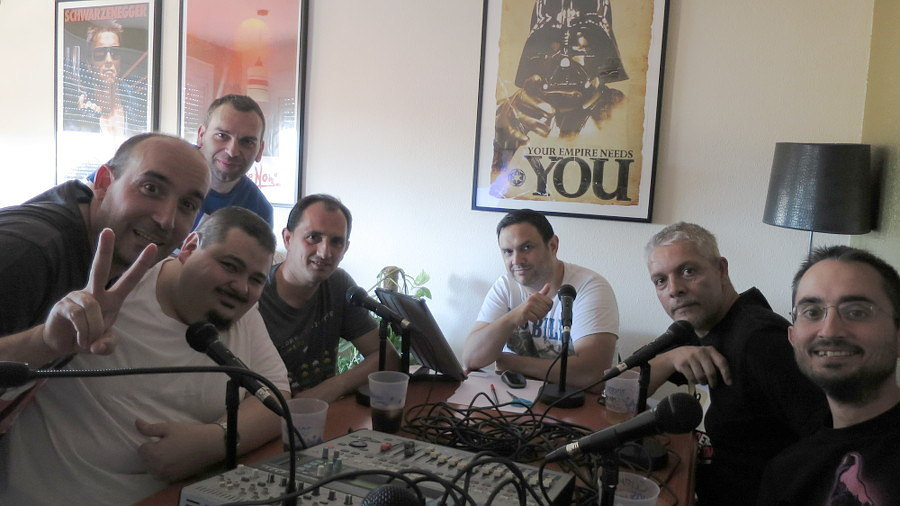

Martes, 24 de Mayo de 2022
Descripción
Voy a tomarme la libertad de dividir esta sección en dos partes. Las
personas contamos con múltiples facetas y la vida me ha
enseñado que la faceta más distendida que una
persona puede tener, puede acabar llevándote a una prometedora
carrera profesional de mejor forma que el “serio” y
abultado Currículum Vitae que antaño
pedían hasta para vender en un estanco.
A modo de resumen, diré que he dedicado gran parte de mi vida a la
informática, tanto de forma “reglada” como
“ocupacional” e incluso de una forma “friki” (si
ustedes me permiten esta última expresión). De igual manera, he
invertido gran cantidad de tiempo en el mundo de los
videojuegos, no solo desde la perspectiva de quien coge un
mando (u otro periférico de entrada) y se pone a
jugar, sino también desde la perspectiva empresarial y de diseño. Lo
considero un mundo apasionante y en constante crecimiento, por lo
que no se me antoja una pérdida de tiempo el invertirlo en analizar
lo que se hace “tras la cortina y
entre bambalinas”, si me entienden. Por último gozo de un
buen nivel de inglés, que cultivo pese a no haber podido
viajar a ningún país angloparlante para perfeccionarlo.
Actualizado: Jueves, 26 de Mayo de 2022
Actividades Extracurriculares

La imagen que uso como avatar en redes sociales. Mi cara recreada
como salida de un ZX Spectrum.
Durante algo más de 20 años, he dedicado mi tiempo libre a diversos
proyectos y asociaciones, comenzando con la “Asociación para la Protección del Manga, Anime y Tebeo en
General” ("APMATG", posteriormente renombrada a
"Ryunen" por comodidad). Durante aquel periodo
colaboré de distintas formas concluyendo con la
presidencia en funciones del “Primer Salón del Comic Málaga-Sevilla” por problemas de agenda del presidente de la asociación.
Fui parte activa del podcast “Indiepodcast” durante
4 años, dode analizábamos la actualidad del sector de los
videojuegos desde un marco humorístico y distendido.
También formo parte del Proyecto "Afrikitown”, que
ha ido cambiando y evolucionando desde el podcast que fue
10 años atrás a el video-podcast que es hoy en día. Como
parte de este proyecto, he desempeñado la función de
podcaster, analista de videojuegos,
articulista y he cubierto en
directo no presencial conferencias destacadas del sector,
como por ejemplo el "Electronic Entertainment Encounter (E3)".
Fui también redactor y auxiliar de maquetación de
la revista digital “NoSoloGamer” durante 3 años y
di un par de conferencias para ellos.

Parte del elenco de Retro Entre Amigos (UN servidor a la
izquierda, con camiseta blanca).
Además, hace ya 10 años, pasé a formar parte de la “Asociación Ludico-Técnica de Aficionados a la Informática
Retro
” (ALTAIR) y soy miembro habitual del
podcast “Retro Entre Amigos” además de
colaborar en el evento anual llamado “RetroPixel”
como presentador en el área de conferencias además de
labores de apoyo en la organización.
Por último, he tenido colaboraciones ocasionales en otros podcast de
renombre como por ejemplo “La Guarida del Sith ”.